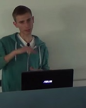
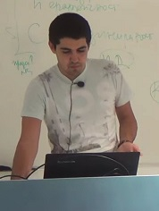

- Име: Светлин
- Фамилия: Накофф
<<<<<<< HEAD
- DJ псевдоним:Светлин ван Бурен
- Семейно положение: "В драматична връзка с Принц Азо"
=======
- Семейно положение: "В драматична връзка с Принц Азо"
- DJ псевдоним: Светлин ван Бурен
>>>>>>> origin/master
- Жанр музика: Мазни кючеци
- Най-известна песен: Питона(Python) кючек
-
- Действащи години: От както започна да тропа по свадбите в ма'алата
Жизнен път:
Качествата на г-н Накофф се забелязват още от ранна възраст. Когато бил едва на осем,той успял да миксира "Кораба Кючек"
<<<<<<< HEAD
на сватбата на своя приятел Ветлогин Колчев(едва 8 годишен). След тази случка той веднага отишъл на битака и си потърсил пулт. Малко по малко,
ван Бурен започнал да набира сила.Пределна точка в неговия живот била забивката му с мистериозно момиче. През ноща двамата били прекъснати
=======
на сватбата на своя приятел Ветлогин Колчев(едва 8 годишен). След тази случка той веднага отишъл на битака и си потърсил пулт. Малко по малко
ван Бурен започнал да набира сила. Пределна точка в неговия живот била забивката му с мистериозно момиче. През ноща двамата били прекъснати
>>>>>>> origin/master
от изгряващата звезда Фики. Той влязъл в стая по погрешка и се извинил: "Извинявам се,повече няма да правя крака!"
На сутринта това момиче се оказало Азис. Младият DJ и поп-фолк дивия Азис започнали да работят заедно,двамата дори записали
голям хит:"Напипай го". Там ван Бурен отговарял за потропването, което се чувало на всеки 32 секунди(трябва да имате
много добър слух за да го чуете). Голям интерес привлича парчето "Питона кючек" за което той твърди ,че тази песен би се харесала
и от чалгари, и от дърти металяги! През 2013г. бе избран за да сътвори химна на парада, който беше проведен на 02.02.2013г.
Тази личност е всеизвестна,има десетки участи и безброй фенове.

- Име: Деян
- Фамилия: Дачев
- DJ псевдоним:Деян Гета
- Семейно положение: "Трайно влюбен в Пеньо"
- Жанр музика: Dance
- Най-известна песен: Чурулик чурулик
-
Жизнен път:
Деян става известен с уменията си да свири с уста още от гимназията.Там той охажвал аверките, като им чуруликал на ушенце.
Много му допадало, вечерно време да се събира с пряители и да чурулика. След време той осъзнал ,че може да изпозлва уменията
си за нещо по-голямо.Един ден докато си издавал звуци, един музикант забелязал таланта му.Двамата създали мега хит наречен:"Чурулик чурулик".
След това Деян решил да започне самостоятелен проект и си измислил псевдонима "Деян Гета".Много хора критикуваха артиста,но сега е един от
най-популярните изпълнители.Скоро се очаква да излезе и парчето "Чурулик кючек" който ще бъде съвместна работа на него и Светлин ван Бурен.
Деян Гета определя себе си като музикант, който композира модерните природни звуци.Макар вече да работи повече пред пулта,неговата мечта е да
участва в конкурс за надсвирване и да го спечели.

- Име: Владимир
- Фамилия: Георгиев
- DJ псевдоним:Владиесто
- Семейно положение: "От време на време"
- Жанр музика: Транс
- Най-известна песен: Туп цъ
-
Жизнен път:
Влади се занимава с музика от малък.Всъщност от доста малък,родители му разказват как докато бил на годинка,той ревял в много ритмичен начин.
Той е един от основатели на стила музика "транс".Това включва траковете му да се 3-4 пъти по-дълги от обикновенно. Известен е с неговия концерт
продължил 3 дни.Този рекорд не бил планиран,просто забравил да изключи своя пулт.Най-големият му хит "Туп цъ" с продължителност от 134мин. е
най-популярното парче в този стил.